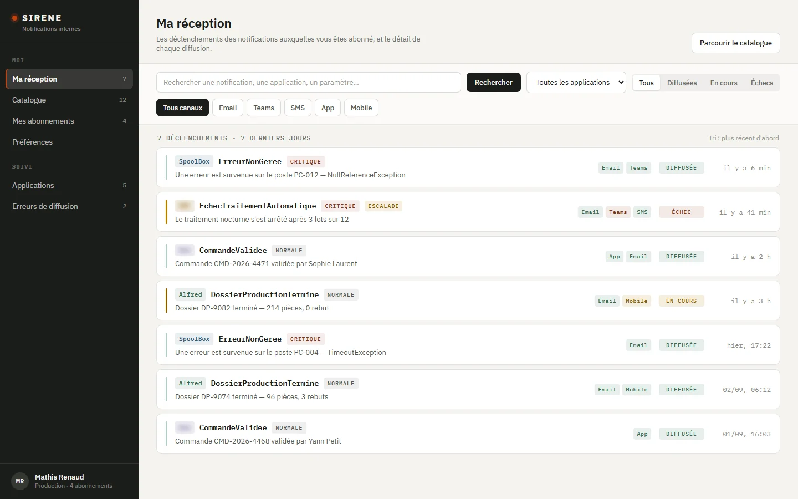

Sirene – une plateforme commune de notifications
Sirene est un service qui centralise les notifications de toutes les applications internes de l'entreprise. Les applications lui confient leurs alertes ; Sirene s'occupe de savoir qui doit les recevoir, par quel moyen et sous quelle forme. Sur ce projet, je ne suis pas développeur : on m'a demandé de jouer le rôle de Product Owner, pour m'entraîner et découvrir un métier et des notions qui sortent de ma zone d'expertise. Mon travail a donc porté sur la conception : comprendre le besoin, le structurer et le traduire en spécifications prêtes à développer.
- Cadre
- Alternance chez 3ma group, équipe Desktop
- Dates
- Depuis septembre 2026 – en cours
- Rôle
- Product Owner du projet. On m'a confié ce rôle pour m'entraîner et me faire découvrir des métiers et des notions qui sortent de mon domaine habituel de développeur. C'est moi qui définis ce que Sirene doit faire, accompagné par mon maître d'alternance et en intégrant les attentes du commanditaire.
- Type de travail
- Analyse du besoin, conception fonctionnelle et technique. Ma part s'arrête à la conception, pas au développement.
- Outils et notions
- Vision produit, personas, parcours utilisateurs, story mapping, modélisation de données relationnelle, C# / .NET et SQL Server (cible technique)
- Lien
- Documentation interne à l'entreprise : elle n'est pas publique.
Le problème de départ
Chaque application interne envoyait ses propres alertes, chacune à sa façon : des destinataires écrits en dur, des messages différents d'un outil à l'autre, aucun suivi de ce qui avait été envoyé ou reçu. Chaque développeur devait recoder la même logique dans chaque application.
Un exemple concret
Chaque nuit, l'ordonnanceur de tâches de l'entreprise lance de nombreux traitements automatiques. Quand l'un d'eux échoue, l'équipe chargée de ces traitements doit être prévenue vite et avec le bon contexte : quel traitement, quelle étape, sur quel serveur, quel message d'erreur.
Avec Sirene, l'étape d'erreur de chaque traitement déclenche une seule notification commune. Les membres de l'équipe, abonnés via leur groupe, la reçoivent dans leur boîte de réception Sirene et par e-mail. Tout nouveau traitement est couvert automatiquement, sans configuration supplémentaire.
Ce que j'ai produit
| Livrable | Contenu | À quoi il sert |
|---|---|---|
| Vision produit | Pitch, « boîte produit » (promesse, ingrédients, fonctionnalités), analyse de la valeur métier | Mettre tout le monde d'accord sur ce qu'est Sirene… et ce qu'il n'est pas. |
| Personas et parcours | 4 profils (utilisatrice, développeur, lead dev, manager) reliés par un même scénario | Vérifier que chaque fonctionnalité répond au besoin d'une personne réelle. |
| Story mapping | Découpage en une première version (MVP) puis deux versions suivantes | Livrer vite une version utile et repousser le reste sans le perdre. |
| Spécification fonctionnelle | Une soixantaine de règles : abonnements, canaux, modèles de messages, réception, historique, erreurs | Donner aux développeurs des règles précises, sans ambiguïté. |
| Documentation technique | Principes de conception, modèle de données de 22 tables, traitements, dette technique | Permettre de commencer le développement sur une base solide. |
| Présentation et maquette | Diaporama de la vision produit présenté à l'équipe, maquette des écrans | Faire valider la direction par l'équipe avant d'aller plus loin. |

Fonctionnalités prévues
- Abonnements : un utilisateur peut s'abonner lui-même, être abonné par son manager ou via son groupe d'équipe.
- Plusieurs canaux : une boîte de réception intégrée (toujours active) et l'e-mail, puis les notifications Windows.
- Modèles de messages à quatre niveaux : personnel, équipe, spécifique à la notification, et par défaut.
- Réception en temps réel, avec recherche, filtres, lu / non lu et notifications importantes.
- Règles et plages « Ne pas déranger » pour que chacun choisisse quand et comment être prévenu.
- Traçabilité complète : chaque envoi, chaque destinataire et chaque résultat sont conservés.
Défis de conception et choix retenus
Éviter les doublons d'abonnement
Une même personne peut être abonnée à une notification pour trois raisons à la fois : par elle-même, par son manager et par son groupe. Sans précaution, elle recevrait trois fois le même message. J'ai choisi de garder un seul abonnement actif par personne, notification et environnement, et d'enregistrer séparément ses différentes origines. Si une origine disparaît, l'abonnement reste tant qu'il en existe une autre.
Ne jamais perdre l'historique
Toutes les suppressions sont logiques : une donnée supprimée est marquée par une date, jamais effacée. Les journaux d'envoi permettent de retrouver, pour chaque notification, les paramètres reçus, les destinataires et le résultat de chaque envoi.
Rendre l'intégration la plus simple possible
Une application cliente identifie une notification par des noms lisibles (application + notification), jamais par des identifiants techniques. Si la notification n'existe pas encore, Sirene peut la créer automatiquement : un développeur peut envoyer sa première alerte sans configuration préalable.
Dire clairement ce qui n'est pas encore décidé
Plutôt que de deviner, j'ai listé les points restant à trancher (mode d'appel depuis l'ordonnanceur, règles de nouvelle tentative, durée de conservation…) et documenté la dette technique assumée, comme la distribution temporaire sous forme de simple DLL en attendant le passage de l'entreprise à NuGet.
Avec le recul : ce que je ferais autrement
- Partir du problème avant la solution. Ma première version décrivait déjà une DLL et l'envoi d'e-mails, avant même de savoir qui avait besoin de quoi. C'est en reprenant dans l'ordre – vision, utilisateurs, puis fonctionnel et technique – que le projet a pris du sens. Je commencerais directement par là.
- Rencontrer de vrais utilisateurs. Mes personas sont construits à partir de ce que je sais de l'entreprise, pas d'entretiens. Je prendrais le temps d'interroger l'équipe qui reçoit aujourd'hui les alertes, pour vérifier que leurs vrais irritants correspondent à ceux que j'ai imaginés.
- Lever le risque principal avant de tout détailler. J'ai spécifié trois versions et 22 tables alors qu'une question décisive reste ouverte : comment l'ordonnanceur de tâches appellera Sirene. Un petit prototype technique sur ce seul point, au début, aurait été plus utile que la précision des versions 2 et 3.
Ce que ce projet m'a appris
Le projet a démarré comme un exercice : « tu es le PO, à toi de définir ce qu'il faut faire ». Ma première version tenait en une page et ne parlait que d'e-mails. En suivant une méthode de préparation de projet transmise par mon maître d'alternance (vision, puis fonctionnel, puis technique, chaque étape validée avant la suivante), elle est devenue un vrai produit pensé pour quatre types d'utilisateurs.
- Me mettre à la place du Product Owner : prioriser, arbitrer, dire non à certaines demandes et défendre une vision devant l'équipe – un regard qui m'aide aussi quand je redeviens développeur.
- Concevoir avant de coder : chaque règle écrite évite une question ou un bug plus tard.
- Penser pour plusieurs profils d'utilisateurs aux besoins différents.
- Modéliser une base de données en pensant à la traçabilité et aux évolutions.
- Découper un projet ambitieux en versions livrables.
Évolutions prévues
- Développement du MVP, puis des versions 2 et 3.
- Nouveaux canaux : Teams, SMS, application mobile.
- Corbeille et restauration des notifications.
← Projet précédent : SpoolBox · Projet suivant : réseau de neurones →